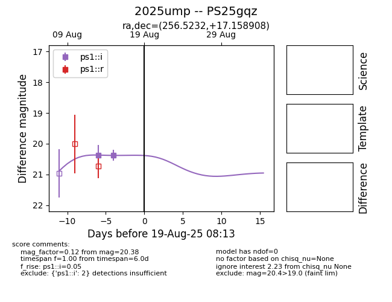

Target 2025ump at 2025-08-19 08:13, see:
TNS: wis-tns.org/object/2025ump
YSE: ziggy.ucolick.org/yse/transient_detail/2025ump
alt names
2025ump (yse,tns)
PS25gqz (panstarrs)
coordinates:
equatorial (ra, dec) = (256.5232,+17.15891)
galactic (l, b) = (37.5572,+30.78283)
photometry
last ps1::i=20.38
2 ps1::i detections
